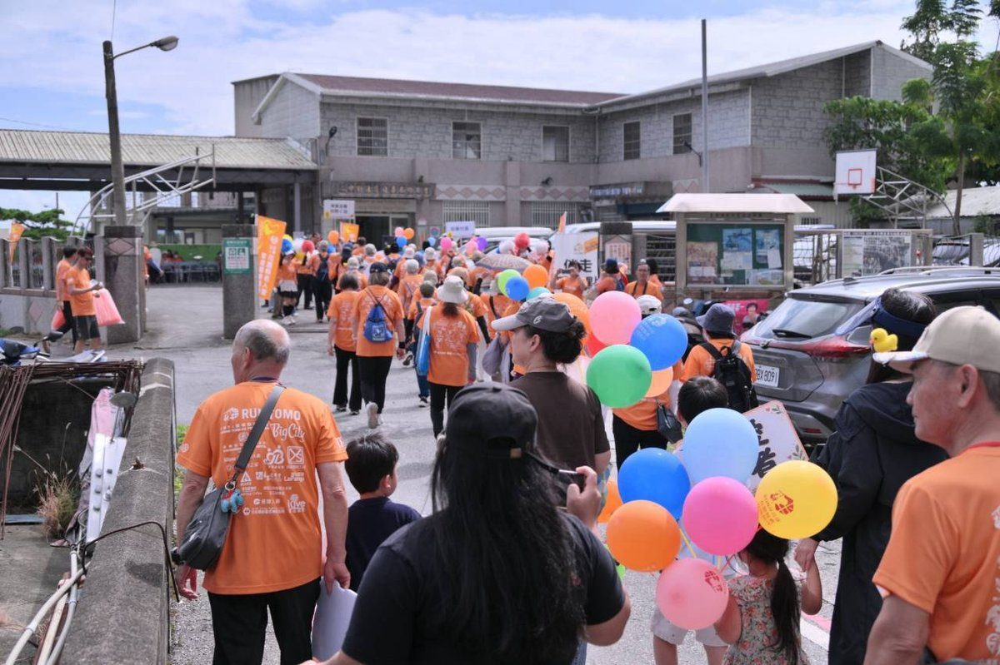

老家協會「RUN伴花蓮場」共融會師吉安

可樂電子報小編/編輯
花蓮縣老人暨家庭關懷協會（下稱老家）30日舉辦「2026 RUN伴TAIWAN．十年跨行、接力向前」活動，帶領百餘位長輩以接力方式，從花蓮市北濱福天宮出發，經過七個路段接棒，最後抵達吉安鄉南華活動中心，並透過社區長者精彩表演，完成今年花蓮場會師活動，展現跨世代、跨社區的友愛與陪伴精神。

活動一早，長輩們在志工夥伴陪同下，分別於各集結地點整裝出發，由北濱隊擔任第一棒，接續由慈濟隊、樂智＋單親隊、稻香隊、東昌隊、主權隊及南華隊接力完成七棒路線。途中經過更生日報社、石來運轉廣場、福町路、洄瀾藝到及花蓮文創園區等地，最後齊聚南華活動中心。百餘位長輩以輕鬆愉快的步伐完成接力，為活動留下溫馨難忘的回憶。

老家理事長楊傑指出，協會十年前便響應日本失智症關懷行動，希望將關懷精神持續在臺灣延續，秉持「有愛、社區相伴」的理念，透過活動凝聚社區力量，讓失智長輩感受到支持與陪伴。失智並非長輩所願，而是腦部病變所造成，需要社會大眾以理解取代誤解、以關懷代替冷漠，也期盼藉由步行活動，帶動更多社區響應，喚起大眾對失智症的重視。

代表鄉長出席的吉安鄉公所社會課專員彭寶玉，帶來鄉長游淑貞對長輩們的關心與問候。她表示，自己從RUN伴活動創辦初期便一路參與，深刻感受到活動最珍貴的意義，就是陪伴長輩走過歲月，一起成長、一起變老，讓陪伴成為生活中最溫暖的力量，也共同打造在地安養、在地老化的友善環境。

吉安鄉長游淑貞表示，人口高齡化是社會共同面對的課題，長者需要的不只是生活照顧，更需要社會的理解、尊重與陪伴，尤其失智長者及其家庭更需要社區支持。未來鄉公所將持續推動失智友善社區，串聯在地照顧資源，完善長者福利與照顧服務，打造安全、安心且有溫度的生活環境，讓每位長者都能在熟悉的土地上，健康、有尊嚴且幸福地享受人生。

📸 更多現場紀實影像